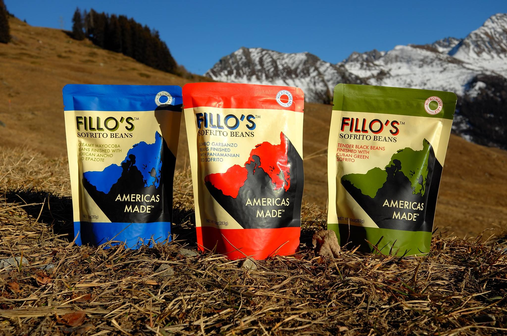

Cocina Defillo
Americas Made™
This is filler text. I am just going to make up some stuff. Cocina Defillo started as childhood memories. Great times with family and friends. Almost every meal we ate had beans, like many parts of the world. These great childhood memories turned into and adult longing for these days. We hope you make great memories like ours with our products.